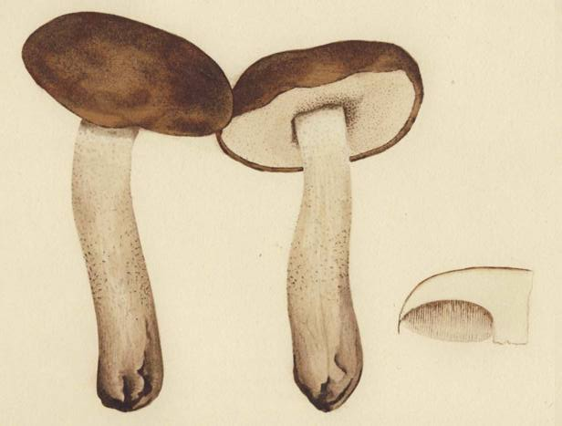
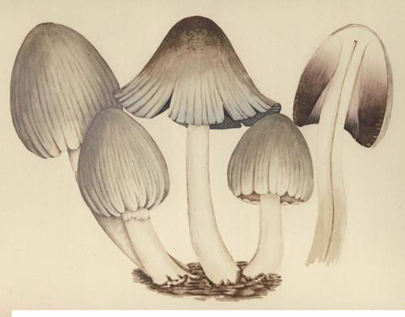

APPENDIX II
Aksakov's 'Remarks and Observations of a Mushroom Hunter'
THE following essay, by Sergej Timofeevich Aksakov, appeared in 1856in the Vestnik
Estestvennykh Nauk, the publication of a group of nature students who constituted the
Moscow Imperial Society. Aksakov was a Russian country squire whose Memoirs are
classics of Russian literature, valued alike for their honest and detailed picture of daily life
in a by-gone world and for the lovable self-portrait that their author unconsciously
paints. His forgotten paper on mushrooms possesses in rich measure the virtues that made
his major works famous, and in translating it we have tried our best to preserve the flavor
of the original. On its first appearance nearly a century ago, the editor, K. F. Rouille,
drew attention to what would be called today its ecological implications, which he referred
to as nature's 'law of interrelations'. Specifically, Aksakov, though only an amateur,
seems to have been precocious in insisting on a biological tie between certain fungi and
the roots of some kinds of trees. The peasants in the Slavic lands from time immemorial
and recently the mycologists of the West had observed that some mushroom species are
always found close to certain kinds of trees, but not until 1885 did A. B. Frank publish in
Berichte der Deutschen Botanischen Gesellschaft the notable paper on truffles that securely
established the symbiotic kinship between trees and fungi - a relationship that came to be
known as mycorrhiza. Apparently Aksakov's further observations concerning a difference
in the growth of mushrooms on various sides of a given tree, according to the compass
points, are unknown to mycologists. Was the behavior that he remarked peculiar to the
trees in his grove, or was he calling attention to a significant phenomenon that others have
overlooked to this day; . . . Here is Aksakov's essay.
Among the sorts of hunting in which men engage, place must be made for the
peaceful quest of mushrooms, or 'mushroom-taking'. This cannot compare with
other kinds of hunting that are more lively because they involve the animal world,
but it can hold its own among many so-called secondary hunts, each of which
offers its own interest. I give preference to mushroom-hunting because you must
look for mushrooms and it follows that you may not find them. There is needed
in addition a certain skill - knowledge about where mushrooms grow, familiarity
with the terrain - and luck! No wonder that the proverb says, "With luck even
mushroom-hunting is good."' In mushroom-hunting there are elements of the
unknown, the unexpected; there is success and there is failure. These are the things
that incite a man to the pursuit and give to it a special interest. The gathering
of berries or nuts, also a hunt of the second class, at first glance might resemble
mushroom-hunting, but on closer inspection we shall see that the latter pos-
sesses great advantages. Mushroom hunters will surely share my view, and with
i. I have heard this proverb in an inverted form: "Without luck it's no use to go mushroom-hunting". S. T. A.
394
APPENDIX II
them I wish to have a chat and tell them of my observations over many years.
Mushrooms are the most nourishing, tasty, and wholesome food, if they are
not eaten to excess nor smothered in too much fat, but perfectly fried or boiled
or thoroughly pickled in brine. Pickling in brine is employed with those mush-
rooms that are conserved in the raw state, such as those of the lactarius and russula
families and others. For city folk mushrooms are a delicacy; to the country
people they are food and in some regions a source of income. The mushroom
is a child of the forest.1 The steppe has no mushrooms except the common field
mushrooms and the lugoviki [marasmius oreades], and even these are born only
in the fertilized soil of cattle-pens, pastures, and roads, and always close to the
dwellings of men and cattle. It is known to all that if you raise trees in a bare
field, either from seed or by transplanting, mushrooms will surely start growing
there, the kind depending on the kind of trees. But, contrary to the opinion
of many, the mysterious power of trees to bring forth mushrooms around them-
selves does not he merely in the shade that is produced by the branches. Shade
is the first requisite, it is true, but only the first. Shade protects the earth from the
scorching rays of the sun, produces humidity and even wetness in the soil,
and this is essential for both the woods and the mushrooms. But their real source,
it seems to me, lies in the roots of the trees, which humidifying in their turn the
surrounding earth, impart to it the arboreal sap; and it is in the roots that in my
opinion lies the key to the mystery of the birth of mushrooms. This is most
convincingly shown by the fact that around stumps of trees where a certain
species formerly grew in the life-giving shade, the same kind will continue to
grow for as long as ten years or more. Roots die slowly. Finally they rot and
dry, and the mushrooms cease. Many a time I have observed tree stumps standing
quite far apart in meadows where the influence of neighboring trees could not
be suspected. As proof of the fact that shade and moisture are not sufficient for
the growth of mushrooms, one could point to certain species of trees such as
the alder, black poplar, poplar, and bird-cherry [padus avium], under and near
which no genuine mushrooms spring up. The complete dependence of mush-
rooms on the particular sap of a tree firmly establishes the fact that certain trees
produce only their own kind of mushroom. If only moisture, shade, and cool-
ness were needed, all kinds of mushrooms would grow under all kinds of trees.
The country-folk recognize well the influence of trees over mushrooms and
therefore have given to some of them names associated with trees, such as the
birch-mushroom, the aspen-mushroom, the hazel-mushroom, the oak-mushroom.
Mushrooms are divided between the edible and the inedible. The latter are
I. In Japanese the generic word for mushrooms is kino-ko, 'forest's child". V. P. W.
395
APPENDIX II
generally called poganki, which includes poisonous mushrooms such as the dubovik
['oak-mushroom', boletus luridus], the mukhomor ['fly-killer', amanita muscaria],
and others. Among the poganki are mushrooms that in some parts of Russia are
considered poisonous, and elsewhere are considered good for food; for example,
the svinukhi or 'cow's ears' [both names are Aksakov's; a paxillus sp.]; valui [rus-
sula foetens]; mochjonki ['the sopping ones';]; chernukhi [russula adusta]; etc. In
order to be eaten without harm, these must be first parboiled or soaked and then
salted. I even knew one man who, apart from the mukhomor and dubovik, consid-
ered all mushrooms edible, and as living evidence to support his faith in their inno-
cence, he had himself and his family to show. He even asserted that the so-called
poganki were as tasty as other mushrooms. This is hard to believe, because most
poganki not only have an unpleasant color and appearance, but also smell bad.
It is worthy of note that many edible or so-called 'good' mushrooms have their
counterpart in the poganki, somewhat resembling them in shape and color. Even
more remarkable is the fact that when poganki make their appearance among
good mushrooms, the latter begin to disappear. Finally the wave of good mush-
rooms passes, and the poganki complete the conquest of the site. This is espe-
cially true of mushrooms that grow up in large clusters, such as masleniki [various
viscid boleti], ryzhiki [various lactarii], and beljanki [lactarius pubescens].
All hunters know that mushrooms have their 'favorite spots', where each year
they grow in varying quantity. No doubt there must be natural causes for this,
but to an uninformed mind this phenomenon is striking and inexplicable. In
a thick forest where the branches and the roots of the trees meet, it is hard to
determine the places favored by mushrooms even if such places exist, but in
open forests or clearings they are obvious and beyond doubt. I have a wood
with two thousand oaks, old and young. The old ones numbering about 200
stand far apart in a large hay-field. Under certain of them, few in number, there
have grown from time immemorial an immense quantity of caps of a somewhat
distinctive form and size, unusually firm and strong, with caps of rare bronze
and steel-like color, and sometimes multi-colored and shiny like marble. Their
size and vigor are probably traceable to the nature of the root sap, and their
color to the effects of sunlight, because oaks set far apart give little shade. Around
the other oaks in the same clearing there are very few mushrooms, and around
some, none at all. I have in my garden and park more than 300 spruces, and only
under four of them do ryzhiki spring up. The location, the soil, the species of
trees - all these are the same, and nevertheless for twelve years now I observe
and yearly confirm my observation that my mushrooms are born exclusively
in the same favorite spots under the same oaks and spruces.
396
APPENDIX II
Different species of mushrooms coming up under different trees exhibit a re-
markable trait in preferring to appear on the north side of the tree, much less
often on the east and west sides, and on the south side, especially during a dry
summer, they are almost totally absent. This influence of the four compass
points and the position of the sun is best observed with the ryzhiki. The red
ryzhiki [lactarius deliciosus;] around a given spruce always appear on the north
side and halfway around to the east and west, whereupon, as if by a drawn line
on approaching the south, their caps become greenish blue with a somewhat
roughened surface, as though dried out; although the stem and the inside of the
broken cap remain equally red and juicy. From this we see that the circumference
of the tree is divided into equal sectors, the red ryzhiki being on the north side,
the greenish on the south, while east and west are equally divided between both
kinds, with the fewest specimens on the south side.
There is no doubt that, as people believe, in rainy, soggy years mushrooms
spring up in greater numbers, especially if bad weather is accompanied by
warmth. But here too there are exceptions, not understood by the ordinary
observer and only to be explained by science. I have often noticed that in spite
of very warm air, rains may be harmful to mushrooms. At times this harmful
effect works slowly and imperceptibly, but at times it acts with amazing rapid-
ity, before your very eyes, especially with young mushrooms just emerging
from the earth. Four times during the last twelve years I have seen devastation
wrought by rain that fell apparently in conditions of propitious warmth. Twice
the rain was accompanied by a sort of dry fog with a nasty burning smell;
and twice the rains were downpours which thoroughly soaked the earth, with
sunshine following immediately afterwards. Visiting every day about noon all
the mushroom-bearing spots of my garden and park, there where on the eve
I had left a host of young ceps, I was struck by the sudden change in their
appearance. More or less all the young baby-mushrooms had become wrinkled
and dried out, and the smallest ones, the size of a pea, and even those the size of a
hazel-nut, had disappeared, and only a half-rotted dust, which was hard to iden-
tify, lay where the mushroom buds had been. Some of the more adult mush-
rooms revived and reached their usual size, but in a somewhat deformed shape.
Others rotted away and collapsed. Such harmful effects were observed and
recorded by me each time. A similar influence but noticeably slower is at times
brought about by an excessive dew at night, which produces yellowish spots on
the grass. Furthermore, let it here be set down that the current popular belief
according to which a mushroom duly noted and marked by man will not grow
up but will shrivel up, is, according to my observations, wholly unjust. I have
397
APPENDIX II
always marked a goodly number of mushrooms, especially ceps, in order to
gather them at the age which I consider most desirable, or else I leave them to
reach their full development and beauty. I will not conceitedly assert that the
gaze of man may not produce a magnetic influence in the vegetable world.
All I can say is that my innumerable experiments led me to conclude that
at least my glance never did any harm to mushrooms.1 I have even tried to touch
the mushrooms lightly and free them from the leaves and grass which at times
hamper their growth. I have gone so far as to break off bits of their caps, and they
continued to grow as before. One thing is true: if you shake the stem of the
mushroom, it wilts and perishes.
In bad weather and toward fall the mushrooms give wider berth to the trees
and more willingly grow along the edges of woods and on naked hills - they 'leap
away', as the people express it; but in the dry and hot weather the mushrooms
cling to the shade and even take shelter under the branches of the trees, especially
the spruces that spread their branches like paws along the earth. That is why peas-
ants call such branches lapniki [paws], and chop them off for various needs without
mercy and without harm to the tree. They even assert that the spruce reaches
its full size for lumber if you groom it by chopping down the lower branches.
Apart from harmful rains and dew, mushrooms are damaged in clearings by
the hot rays of the midday sun. Such rays scorch their caps, and although the
coolness of the night, the dew, and an occasional rain freshen them up, the daily
sun-burn makes them shrivel before they reach their full maturity. Lengthy and
frequent rains in their turn damage the growth of mushrooms, especially in the
shade, in thick grass and overgrown spots. The mushrooms rot, .grow mouldy,
and perish. They are also spoiled and destroyed by living enemies. Slugs and
snails firmly attach themselves to mushrooms, eating and boring through the
caps and stems. In years of poor mushroom harvests, it is rare to find one not
harboring two or three slugs. Squirrels are also mushroom hunters, going out
especially for ceps, and often you will find marks of sharp teeth on their chewed
caps. But the worst pest of mushrooms is a small white worm. Some years there
are so many that the stem of every cep, strong and healthy on the outside, is
inevitably undermined inside, and falls to pieces if picked up carelessly or firmly.
Fortunately the caps are the last to be attacked by worms, and often remain
healthy and intact with the stem completely eaten away. It is surprising how
mushrooms in such a condition continue to receive nourishment.
i. The Swiss mycologist F. Leuba, in discussing the morel, refers to the same popular belief, which he must have
encountered in his native country. See Les Champignons Comestibles et les Especes Veneneuses, Neuchatel, 1890,
footnote p. 87. V. P. W.
398
PLATE LXXXI
Jean-Henri Fabre. Boletus scaber Fr. ex Bull. (= B. leucophseus Pers.)
Russian: berjozovik.

PLATE LXXXII
Jean-Henri Fabre. Coprinus atramentarius Fr. ex Bull.
French: pisse-chien; Russian: opjonok.

APPENDIX II
The current notion that, especially after a rain, mushrooms spring up over-
night, is not true. Nevertheless, it is true that at times one finds young mushrooms
where none were seen the night before. They were there, however, but remained
unnoticed, because they were hardly above the ground, and covered with leaves
and grass. Those quickest to mature or rather to grow up, such as the berjozoviki
[boletus scaber] and syroezhki [various russulse], reach full development in three
days, but the ceps take a week or more. The slowest to grow is the dubovik, a
worthless mushroom and even poisonous, as I said before.
In good harvest years mushrooms may be seen in clusters and families. They
even grow as twins or triplets or more. I speak of those mushrooms that usually
grow single, such as the ceps, the birch-mushrooms, the aspen-mushrooms, etc.
I once made a sketch of an aspen-mushroom that showed six stems covered by
one cap. A superabundance of mycelium and of the earth's sap at times produces
freakish and ugly forms. Once I found a russula with another russula growing out
of its cap. I made a drawing of this curious monstrosity. More than once I have
found in the earth large lumps of the mycelium of the cep, a mass much re-
sembling a root and the size of a man's head.
This is the order of the appearance of mushrooms. As soon as it begins to
thaw in the spring, the morels appear in the meadows and the open woods.
At first theglukhie ['deaf ones', an helvella], then the strojki [morchella esculentaj.
They grow even under a crust of snow with water rushing beneath. After the
morels a month elapses, or more if there is drought, during which there are no
mushrooms whatever. Then come the masljaniki, berjozoviki, syroezhki, osinoviki
[boletus versipellis], then the first wave of gruzdi, podgruzdki [various kinds of
lactarii], and ceps; then follow the lisichki [chanterelles], and field mushrooms;
finally come the autumn mushrooms, viz., volzhanki [lactarius torminosus],
beljanki, ryzhiki, and opjonki. This whole order is upset at times, and it always
depends on the weather and the atmospheric influences. I must add that each
species appears in two or three waves during summer and fall, and until fre-
quent and strong frosts, especially during droughts, finally kill off the mushroom
growth. Speaking of each species of mushroom separately, I shall tell in more
detail of the occasional mutations in their growth.
Translated by VPW and KGW
Aksakov's essay ends here. Apparently he never returned to the subject, and his
observations on growth 'mutations' are lost to us. He died in 1859, three years after
the publication of the paper. VPW.